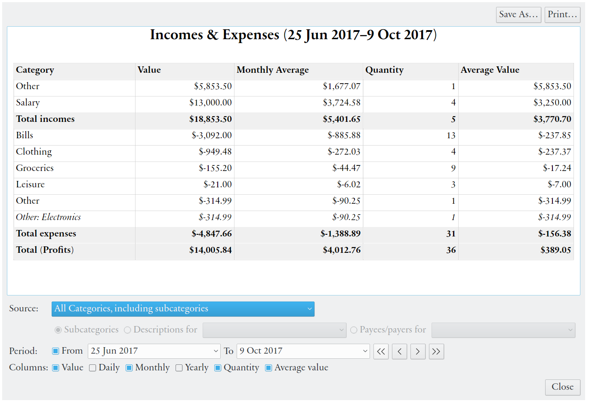
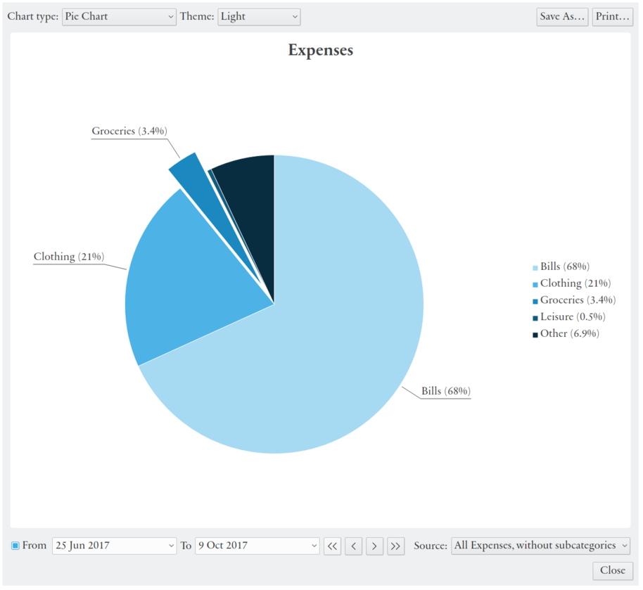
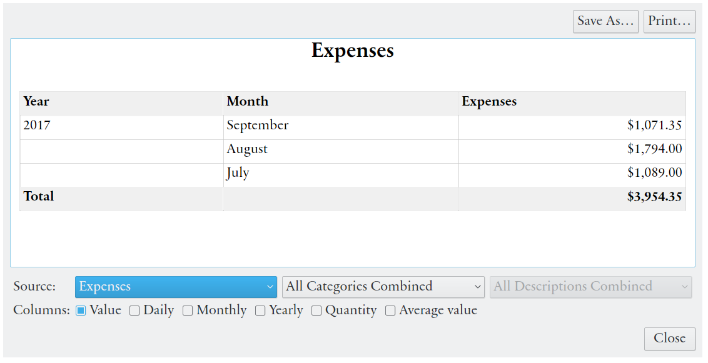
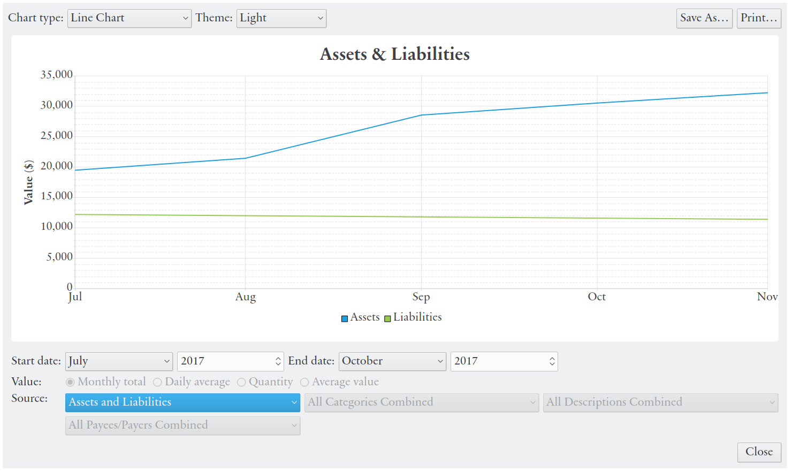

Table of Contents
You can get an overview of your economical situation by using the charts and reports accessible from the menu. These are divided in to variants — categories comparison and development over time.
The categories comparison report allows comparison between or within expense and/or income categories. The initial view shows all categories with subcategories hidden, with values for the past year. The display settings can be changed at the bottom of the window.
|  |
The source can changed to also display every separate subcategory, or only show a single category. If a specific category is selected, you will have the option to compare the values for subcategories, different transaction descriptions or payees/payers. You break it down even further by only comparing descriptions for a specific payee/payer, payees/payers for a specific description.
Below this the period shown can be selected. For dates extending in to the future, scheduled transactions are included in the value, but not budgeted incomes/expenses.
Finally you can select which columns shall be displayed. The columns include total value, averages based different time periods (e.g. the daily average equals the total value divided by the number of days in the selected time period), total quantity, and average value of each item (total value divided by total quantity). The buttons in the upper right corner allows you to save the view as a HTML file or print it on paper.
The categories comparison chart displays the same total values as the report, but in a pie or bar chart. The chart type and style is selected in the upper right corner of the window.
For the chart you can select (in the lower right corner) to display all expense or income categories (with subcategories shown or hidden), or a specific category. If a single category is selected, the data is divided into subcategories, or (if there are no subcategory) into different transaction descriptions. Here you also have the option to compare the value of different accounts (assets).
As in the report you can select which the time period values are shown for (for accounts the from date is ignored). In the upper right there also here buttons for saving (to an image file), or printing the chart.
|  |
The development over time report shows values for each separate month and year. Initially total profits (incomes minus expenses) are shown. Below the table you will have the option to show expenses or incomes separately instead. These can be further broken down into separate categories and transaction descriptions. Note that payments that reduces a debt are not counted as expenses.
At the bottom of the window displayed columns can be selected. The columns include total value, averages based different time periods (e.g. the daily average equals the total value divided by the number of days in the selected time period), total quantity, and average value of each item (total value divided by total quantity). The buttons in the upper right corner allows you to save the view as a HTML file or print it on paper.
|  |
The development over time chart shows how expenses and incomes changes over time, with values grouped by month, in line or bar chart. The chart type and style is selected in the upper right corner of the window. Initially incomes and expenses are shown from the month and year of the first transaction to the the end of the last month (unless the first and last month is the same).
The time span displayed can be changed below the chart. Bar chart can at most display one whole year at the same time. For future dates scheduled transactions are included, but budgeted incomes/expenses are only included when all categories are combined (including the profits source).
Below the table you will have the option to profits(expenses minus incomes) or specific categories. Categories can be shown combined or separately, all with separate lines/bars or only one. Categories can be further broken down into transaction descriptions and separate payees/payers. There is also an option to display total accumulated assets and liabilities (the Assets and Liabilities source).
You can select to show the total values for each month, the daily average (within each month), the total quantity or the average value (total value divided by total quantity each month). Daily averages compensates for the different number of days in month, but this is offset by the fact that large expenses and incomes often occur monthly.
Click on a label in the chart legend to hide a data series from the chart. Move the mouse over a line or a bar to show details above single values. Click, hold and move the pointer (drag) to zoom in the chart. In the upper right there also here buttons for saving (to an image file), or printing the chart.
|  |